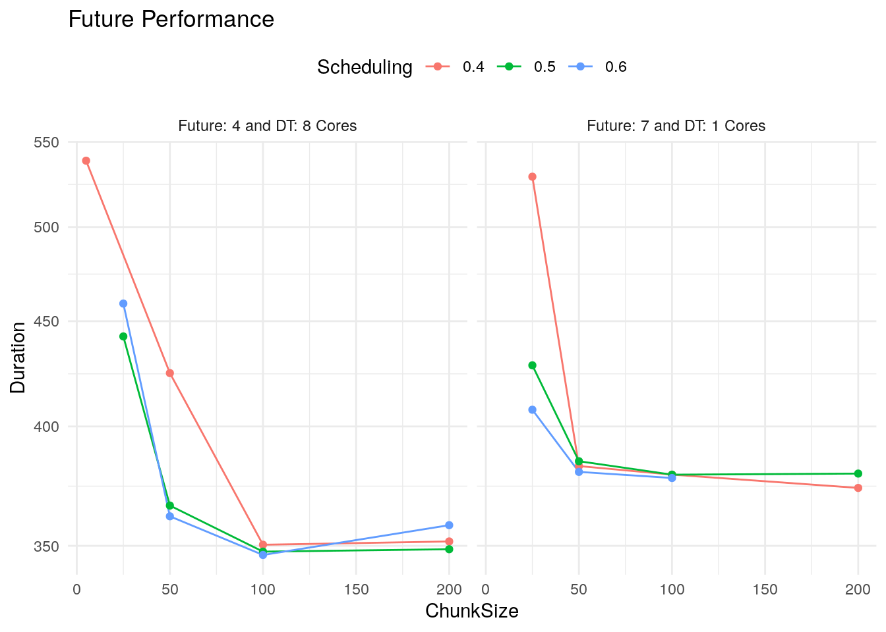
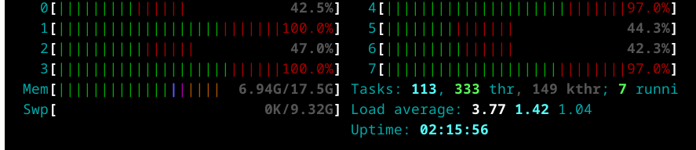

## Custom functions
library('project.nyc.taxi')
## To manage relative paths
library(here)
## To transform data larger than RAM
library(DBI)
library(duckdb)
## To transform data that fits in RAM
library(data.table)
library(lubridate)
library(future)
library(future.apply)
## To create plots
library(ggplot2)
library(scales)
## Defining the print params to use in the report
options(datatable.print.nrows = 15, digits = 4)Data Understanding
After completing the business understanding phase we are ready to perform the data understanding phase by performing an EDA with the following steps:
- Exploring the individual distribution of variables.
- Exploring correlations between predictors and target variable.
- Exploring correlations between predictors.
As this will help to: - Ensure data quality - Identify key predictors - Guide model choice and feature engineering
Setting the environment up
Loading packages to use
Creating DB connections
con <- dbConnect(duckdb(), dbdir = here("output/my-db.duckdb"))
dbListTables(conn = con)
#> [1] "NycTrips" "PointMeanDistance" "ZoneCodesFilter"Sampling data to use
As we have too much data will only need 532,466 samples for training and testing the model.
ValidZoneSampleQuery <- glue::glue("
SELECT t1.*
FROM NycTrips t1
INNER JOIN ZoneCodesFilter t2
ON t1.PULocationID = t2.PULocationID AND
t1.DOLocationID = t2.DOLocationID
USING SAMPLE 0.20% (system, 547548);
")
ValidZoneSample <- dbGetQuery(con, ValidZoneSampleQuery)
DT(ValidZoneSample)Adding the variable to predict
Once we have a sample of the data, we can add the variable to predict as it isn’t part of the of original data by following the next steps:
- Importing the data
PointMeanDistanceas data.table.
PointMeanDistance <- fst::read_fst(here("output/cache-data/PointMeanDistance.fst"), as.data.table = TRUE)- Split the data by month and link with the original parquet files.
ValidZoneSampleByMonth <-
ValidZoneSample[
j = request_datetime_extra := request_datetime + minutes(15)
][floor_date(request_datetime_extra, unit = "month") == floor_date(request_datetime, unit = "month"),
.(data = list(.SD)),
keyby = c("year", "month"),
.SDcols = !c("request_datetime_extra")
][, source_path := here("raw-data/trip-data") |> dir(recursive = TRUE, full.names = TRUE)]
tibble::as_tibble(ValidZoneSampleByMonth)
#> # A tibble: 24 × 4
#> year month data source_path
#> <dbl> <chr> <list> <chr>
#> 1 2022 01 <dt [18,668 × 26]> /home/rstudio/NycTaxi/raw-data/trip-data/year…
#> 2 2022 02 <dt [29,536 × 26]> /home/rstudio/NycTaxi/raw-data/trip-data/year…
#> 3 2022 03 <dt [9,543 × 26]> /home/rstudio/NycTaxi/raw-data/trip-data/year…
#> 4 2022 04 <dt [15,632 × 26]> /home/rstudio/NycTaxi/raw-data/trip-data/year…
#> 5 2022 05 <dt [19,053 × 26]> /home/rstudio/NycTaxi/raw-data/trip-data/year…
#> 6 2022 06 <dt [10,458 × 26]> /home/rstudio/NycTaxi/raw-data/trip-data/year…
#> 7 2022 07 <dt [15,217 × 26]> /home/rstudio/NycTaxi/raw-data/trip-data/year…
#> 8 2022 08 <dt [34,336 × 26]> /home/rstudio/NycTaxi/raw-data/trip-data/year…
#> 9 2022 09 <dt [34,385 × 26]> /home/rstudio/NycTaxi/raw-data/trip-data/year…
#> 10 2022 10 <dt [32,263 × 26]> /home/rstudio/NycTaxi/raw-data/trip-data/year…
#> # ℹ 14 more rows- Defining configuration of parallel process.
BenchmarkResults <- data.frame(
CoreConfiguration = c(
rep("Future: 7 and DT: 1 Cores", times = 11L),
rep("Future: 4 and DT: 8 Cores", times = 12L)
),
Scheduling = c(
0.4, 0.5, 0.6, 0.4, 0.5, 0.6, 0.4, 0.5, 0.6, 0.4, 0.5,
0.4, 0.5, 0.6, 0.4, 0.5, 0.6, 0.4, 0.5, 0.6, 0.4, 0.5, 0.6
),
ChunkSize = c(
25, 25, 25, 50, 50, 50, 100, 100, 100, 200, 200,
5, 25, 25, 50, 50, 50, 100, 100, 100, 200, 200, 200
),
Duration = c(
528.970, 428.321, 407.558, 382.662, 384.741, 380.178, 379.015, 379.000, 377.592, 373.415, 379.463,
538.531, 442.395, 458.97, 424.615, 366.119, 361.745, 350.42, 347.733, 346.434, 351.716, 348.664, 358.177
))
ggplot(BenchmarkResults,
aes(x = ChunkSize,
y = Duration,
color = as.character(Scheduling),
group = interaction(Scheduling, CoreConfiguration))) +
geom_line() +
geom_point() +
scale_y_log10() +
facet_wrap(vars(CoreConfiguration)) +
labs(title = "Future Performance",
color = "Scheduling") +
theme_minimal() +
theme(legend.position = "top")
- Run the process in parallel
data.table::setDTthreads(1)
options(future.globals.maxSize = 20 * 1e9)
plan(multicore, workers = 7)
ValidZoneSampleByMonthTarget <- ValidZoneSampleByMonth[
j = add_take_current_trip(trip_sample = data[[1L]],
point_mean_distance = PointMeanDistance,
parquet_path = source_path,
future.scheduling = 0.4,
future.chunk.size = 200),
by = c("year", "month")
]
dbWriteTable(con, "ValidZoneSampleByMonthTarget", ValidZoneSampleByMonthTarget)By running htop in the terminal we can confirm that the process is running as expected:
- We are using all the 8 cores of the computer.
- The process is running in the 17GB of RAM.

all_data <-
here("output/take-trip-fst") |>
list.files(full.names = TRUE) |>
lapply(FUN = fst::read_fst,
as.data.table = TRUE) |>
rbindlist()
all_data[, .(avg = mean(take_current_trip)),
.(year = year(request_datetime))]
#> year avg
#> <num> <num>
#> 1: 2022 0.7583
#> 2: 2023 0.7742dbDisconnect(con, shutdown = TRUE)
rm(con)